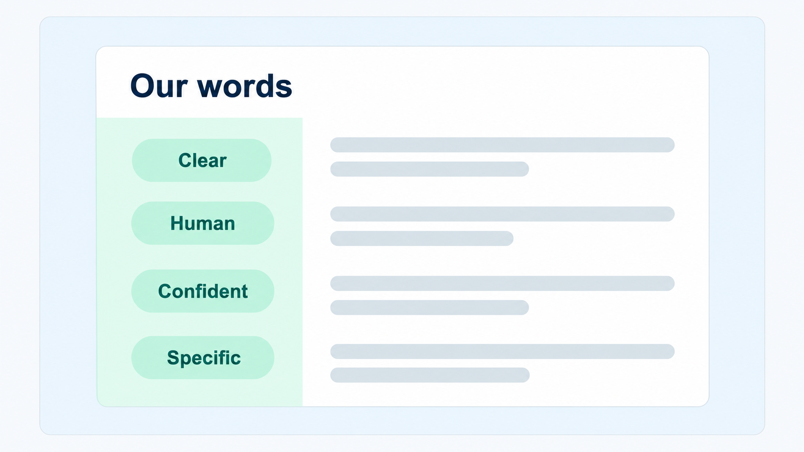
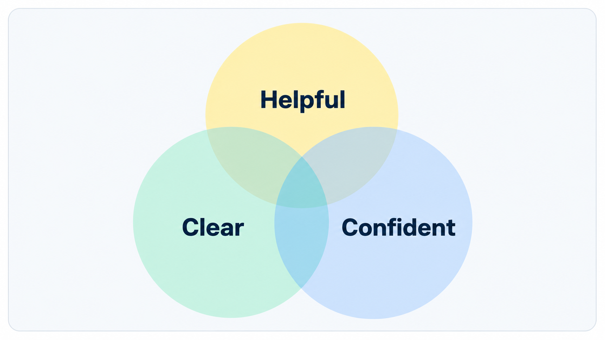
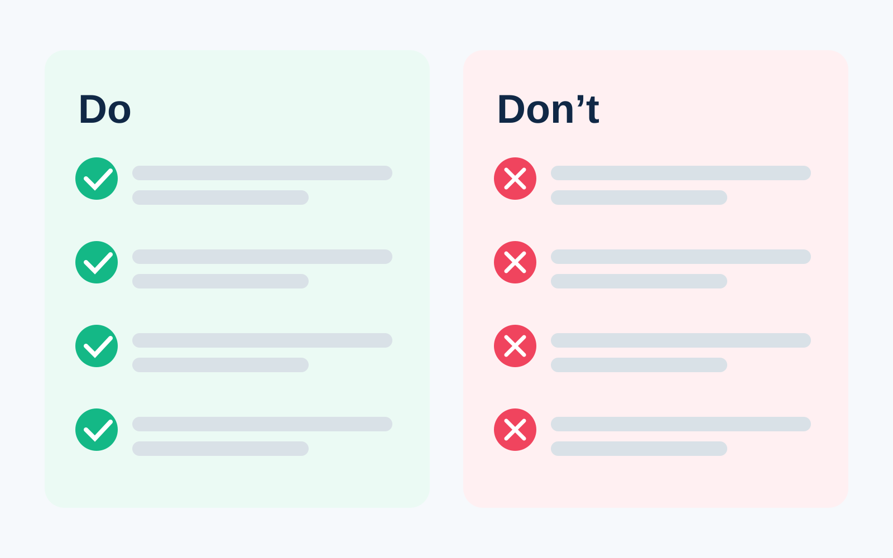
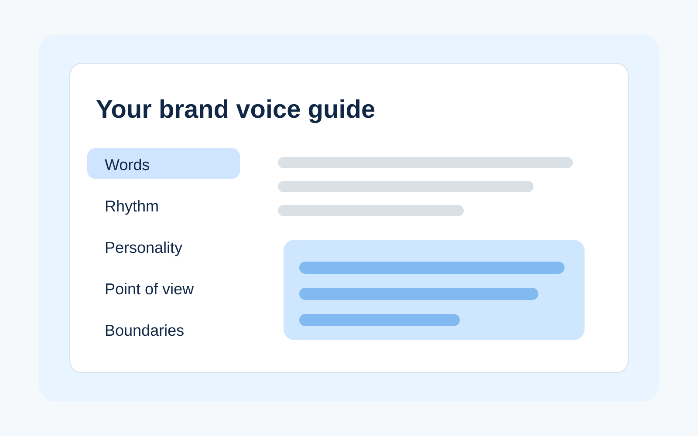

Tone is how you sound in a moment. Brand voice is the system that keeps the writing recognizable when the moment changes.
A product page, support message, launch email, collection page, and shipping update should not all sound identical. They are doing different jobs. But they should still feel like they came from the same brand.
That consistency comes from repeatable choices. The words you reach for. The rhythm of your sentences. The perspective you write from. The personality you allow in. The lines you do not cross.
1. Words: more than a word list
Vocabulary is the foundation of brand voice. It includes the words and phrases you use repeatedly, the ones you avoid, and the specific language that signals what your brand is about.
A useful vocabulary guide goes beyond a handful of adjectives. Define the nouns you use for products and customers. Choose the verbs that fit your brand. Decide which claims need evidence. Identify the filler words that make your copy sound interchangeable with everyone else.
The goal is not to force the same words into every description. It is to give writers a shared vocabulary so each new draft does not start from zero.
2. Rhythm: find a natural cadence
Rhythm is how the writing moves. Sentence length, punctuation, density, and repetition all affect how the brand feels before a reader has even analyzed the actual word choice.
Short sentences can feel direct and energetic. Longer sentences can feel more conversational or editorial. Neither is automatically better. What matters is choosing a range that feels natural for the brand and using it consistently.
A product description can flex between short and long sentences. A button label probably cannot. Voice should survive those format changes without every surface sounding mechanically identical.
3. Personality: be human on purpose
Personality is what makes a brand feel like a real teammate instead of a database with a logo. It shows up in choices about formality, humor, warmth, confidence, empathy, and energy.
The trap is treating personality as a pile of adjectives. “Friendly, smart, confident” sounds useful until three people interpret those words three different ways.
Pick a small set of traits and define what they look like in practice. Better yet, define the edge of each trait. Helpful, not over-explaining. Confident, not absolute. Warm, not gushy. Clear, not cold.

4. Point of view: choose a consistent perspective
Point of view is how your brand sees the customer, the product, and the problem being solved. It shapes what you emphasize, what you leave out, and who gets the spotlight in a sentence.
“We made this…” makes the brand visible. “You get…” centers the customer. “This product…” lets the product carry the sentence. All three can work. Constantly switching between them without a reason can make the copy feel unstable.
Choose a default relationship that fits the brand. Then break the pattern deliberately when the context calls for it.

5. Boundaries: know where not to go
Boundaries are as important as guidance. They tell writers which language, topics, claims, and tones do not fit the brand, even when a trend or deadline makes them tempting.
Useful boundaries are concrete. Do not manufacture urgency. Do not make performance claims without support. Do not sacrifice clarity for a joke. Do not use technical language just to sound authoritative.
These rules make review faster. Instead of arguing over whether something simply “feels off,” the team can point to a shared standard.

6. Put it together: build a guide your team will use
You do not need a 40-page brand book to create consistent product copy. A practical voice guide can be one page if it captures the choices people actually need to make.
Start with five areas: preferred language, sentence rhythm, personality traits, point of view, and boundaries. Add real examples. Keep the guide easy to find. Update it when the brand learns something about how it wants to communicate.
The test is simple: can someone use the guide to make a writing decision without asking what “on-brand” means?

Where penstack fits in
Penstack’s Brand Voice quiz turns these ideas into reusable brand context. The goal is not to pick one tone label and apply it everywhere. It is to give product generation a stronger starting point: how the brand communicates, what it emphasizes, and where its boundaries sit.
That context can make drafts more consistent across products and stores, but the final review still matters. Check the facts. Check the positioning. Make sure the words fit this product and this moment.
The takeaway
Tone is one dial. Brand voice is the whole control panel. Define the words, rhythm, personality, point of view, and boundaries that should stay recognizable even when the situation changes.
Give product copy a stronger starting point.
Build your Brand Voice once, then use it as reusable context across the product workflow.